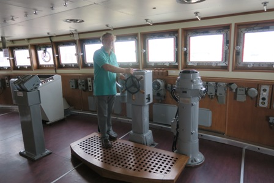

La prima volta che son capitato da quelle parti, la città si chiamava Leningrado ed il Krassin stava ancora cercando gas e petrolio nei mari artici e perciò mi sfuggì.
La volta successiva che tornai lassù la città si chiamava San Pietroburgo, ma piacendomi anche la Storia patteggiai il Krassin con l'incrociatore Aurora (altra pietra miliare!) cosicchè ancora mi sfuggì.
-La prossima volta non me lo perdo di sicuro!- mi ripromisi - ed alla fine ci sono riuscito.
Ma cos'è questo Krassin?
Il Krassin è quel rompighiaccio che salvò i superstiti della spedizione Nobile dal pack artico nel 1928 e che ne decretò fama mondiale ed imperitura.
Si può capire che per un appassionato di spedizioni polari, il Krassin rappresenta un must assoluto da vedere.
Eccolo finalmente, ancorato sulla Neva!

Il rompighiaccio Krassin divenne famoso in tutto il mondo nel 1928 quando, dal ritorno dal Polo Nord, il dirigibile "Italia" si schiantò sul pack ed i sopravvissuti della spedizione del generale Umberto Nobile poterono essere salvati dall'unico mezzo in grado di raggiungere la Tenda Rossa e dalla costanza e tenacia del Prof. Samoilovic che guidava i soccorritori russi.
Era destinato ad essere un salvatore, il Krassin, perchè sulla via del ritorno assistette pure la nave passeggeri tedesca "Monte Cervantes" carica di passeggeri e in avaria per collisioni coi ghiacci, tant'è che per questo salvataggio il rompighiaccio è stato insignito dell'Ordine della bandiera rossa del lavoro.
La guerra mondiale sorprese più tardi la nave in Estremo Oriente, da dove fu costretta a ritornare attraversando l'oceano Pacifico, il canale di Panama e l'Atlantico, per continuare la sua missione bellica nell'Artico dilaniato dalla guerra.
E' interessante ricordare che il rompighiaccio potè salvarsi solo per miracolo allorchè, guidando un convoglio di trasporti militari, fu oggetto di caccia da parte della famosa corazzata tascabile tedesca "Admiral Scheer" (gemella della Deutchland e della Graaf Spee) che non gli avrebbe lasciato scampo.
Negli anni '50, il Krassin subì una profonda revisione e ammodernamento nei cantieri navali della RDT, che ne modificò parzialmente l'aspetto e le dotazioni tecniche.
Nel ruolo di rompighiaccio il Krassin ha lavorato fino al 1972, poi il veterano della flotta fu dedicato alla Spedizione geologica di prospezione marina del Ministero Geografico dell'URSS.
Furono eliminati i due motori a vapore ed installati due turbogeneratori e la nave fu adibita a ricerca esplorativa di petrolio e gas nei mari artici.
A fine anni '80 il Krassin fu trasferito da Murmansk a Leningrado, e dopo molte disavventure che rischiarono di farlo demolire come rottame, qualche emerito volonteroso in quegli anni di fortissimi sconvolgimenti che decretarono la fine dell'Unione Sovietica riuscì a fargli conseguire lo status di monumento storico... fino ad arrivare al 2014 quando finalmente fu rimorchiato nell'attuale sito sulla Neva, pulito e restaurato, per diventare quella nave-museo che mi sono rallegrato con molto piacere di visitare.
...°°°OOO°°°...
Dal mio blog ogni tanto salta fuori il mio interesse e passione per le spedizioni polari che fecero storia a cavallo tra l'ottocento e i primi decenni del secolo scorso.
Tali eventi, avventurosi e pericolosissimi, avevano allora una risonanza mondiale che al giorno d'oggi sarebbe assolutamente inconcepibile.
Ormai siamo (purtroppo) abituati a non stupirci più di nulla e sono sicuro che se domani un uomo mettesse piede su Marte probabilmente farebbe meno clamore di quello che suscitava nei media di allora Amundsen nel 1911 conquistando il Polo Sud o magari di quanti giornali aveva fatto vendere Stanley pronunciando il suo famoso "...I presume..." nei riguardi di Livingstone.
Altri tempi naturalmente, nè migliori nè peggiori, semplicemente altri diversissimi tempi.

E per concludere... ecco PaoloAlbert tutto preso con il timone del Krassin... non è propriamente la plancia com'era ai tempi del Prof. Samoilovic, ma non si può aver tutto!
1 commenti